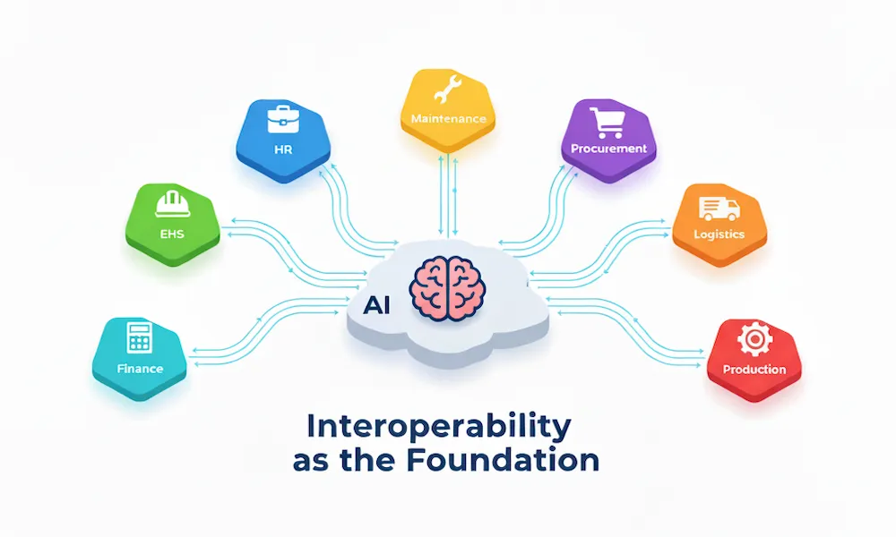

Closing the AI Readiness Gap: Interoperability as the Foundation
November 04, 2025
In the previous discussion on the AI Readiness Gap in EHS (Environment, Health, and Safety), I established a critical fact that most organizations are trying to build predictive safety systems with an AI that is context-blind. They possess a wealth of EHS data but this data lives on an isolated island, cut off from the operational mainland. An AI fed with only EHS data can, at best, tell you what you already know. It can spot trends in incidents, but it can never understand the conditions that create them.
The solution is interoperability. This means focusing on "Building the Foundation" first—a core concept from the AI Readiness Gap discussion—by creating the data infrastructure and discipline required for any successful AI initiative.
Interoperability is the practice of building data bridges between your EHS management system and your other core business systems, primarily Human Resources (HR) and Maintenance/Operations. While siloed data can produce low-value forecasts (i.e, "we will have 10 incidents next month"), interoperability is the only way to add the rich contextual features that AI needs to move from simple reporting to high-value, actionable prediction (e.g., "which employees are at risk this week, and why"). This article is a practical guide on how to build those bridges.
1. Your First Step: The "Common-Key Workshop"
Before any technical work begins, your first action is purely strategic. The goal is not technical discovery; it's strategic alignment.
This alignment begins with a brief "listening tour" to understand the core business challenges of your partners. Your strategy must be: Start with their KPI (Key Performance Indicator), not your data. Before scheduling the workshop, have an informal 15-minute chat with your counterparts in HR and Maintenance to find their "one metric"-the core KPI they are held accountable for. You will hear "New-Hire Turnover" or "Cost-per-Hire" from HR; "OEE (Overall Equipment Effectiveness)/Uptime" or "Mean Time Between Failures" from Maintenance.
With this knowledge, you can formulate a specific, data-driven hypothesis. You must connect your EHS data (which they are blind to) to their KPI (their primary pain point).
- Hypothesis for HR: "I bet new hires who have a near-miss in their first 30 days (my data) are X% more likely to quit (their turnover problem)."
- Hypothesis for Maintenance: "I bet a spike in "guard vibration" near-misses (my data) is a leading indicator for an asset failure that hurts their OEE."
Now you are ready to schedule the "Common-Key Workshop." You can frame the invitation correctly because you are not "asking for data"; you are "offering a new, unique data source to help solve their core problem."
Your invitation to HR should frame this as a strategic partnership to solve one of their core business challenges: new-hire turnover. This is your hypothesis in action. You are not asking for data; you are offering a crucial, missing dataset. Propose a data-mapping exercise, explaining that while HR can see Training_Status and Termination_Date, they are blind to the operational experience in between. Your offer is to correlate their data (HRIS - Human Resources Information System) with your data (EHS incidents and near-misses). This allows you to jointly answer: "What is the 90-day retention rate for new hires who have a near-miss or incident, versus those who do not?" This reframes your proposal: you are a partner providing the missing link to prove that a strong safety onboarding is a powerful, measurable retention tool.
For Maintenance, the frame is just as specific. You are offering new data to help them achieve their reliability goals. Propose linking your EHS near-miss data (e.g., "guard vibration") to their PM schedules, based on your OEE hypothesis. This demonstrates how EHS data can help them predict asset failures before they cause unplanned downtime, directly supporting their core KPI.
This approach gets them in the room. The initial focus on only HR and Maintenance is a deliberate strategic choice since HR (people) and Maintenance (assets) provide the data context for over 80% of your most significant operational risks. This limited scope allows you to secure a quick, high-value win, which in turn builds the momentum needed for future phases.
The agenda is simple: get formal agreement on the "common keys" you will use to connect your systems.
- For people-data: The common key is typically "Employee ID" or "Worker ID." This unique identifier exists in both your EHS system (incident reports) and your HRIS (employee records). Agreeing on this key allows you to link incident data with employee attributes like Hire Date, Training Status, Shift Patterns, and Termination Date.
- For asset-data: The common key is usually "Asset ID" or "Equipment Tag Number." This identifier is found in both your EHS system (near-miss and incident reports) and your CMMS (Computerized Maintenance Management System) (maintenance records). This connection enables you to correlate safety events with maintenance history, PM schedules, and asset performance metrics.
The power of this meeting is not in discovering complex, hidden keys; it is in getting formal agreement to use the simple, obvious keys that already exist. This agreement is the true foundation for everything that follows.
This simple, non-technical meeting establishes your common language and makes the future technical solution dramatically simpler. Once you prove the value of this first connection, you will expand this workshop to include other departments. But you must start small.
2. The Power of Data-Mapping: From 'What' to 'Why'
With your common keys established, you can now begin data-mapping. This is the practical process of connecting specific data points from different systems to create a single, unified view of an event. This process is what transforms your data from a simple "what" (an incident occurred) into a powerful "why" (the specific conditions that led to the incident).
An EHS-only system can tell you: "Operator slipped and fell at 10:15 PM."
An integrated system can tell you why. Let's look at two examples of data-mapping in action:
Example 1: EHS + Human Resources (HR): In this scenario, an incident report is filed from your EHS system for an employee who suffered a hand laceration, identified by Employee ID: 7781. Because this common key exists, you query that ID in your HRIS (Human Resources Information System) and instantly discover the context: this employee was hired 45 days ago, their "Machine Guarding Safety" training is marked "Overdue," and this was the 11th hour of a 12-hour night shift. You haven't just logged an incident; you've identified a critical risk profile. You now have a data-backed hypothesis: "New employees working extended hours who have not completed their guarding training are at a significantly higher risk of hand injuries." You can now act before the next incident, targeting this specific high-risk group.
Example 2: EHS + Maintenance (CMMS): Here, a near-miss is reported on Production Line 4, identified by Asset ID: L4-22B. The EHS report notes a "guard vibration." By querying that Asset ID in your CMMS, you find the operational context: Preventive maintenance (PM) on this asset is 28 days overdue, and this specific asset model is responsible for 40% of all "vibration" work orders, despite being only 10% of your assets.
This is no longer just a "safety" issue. You've uncovered a direct, measurable link between a specific maintenance schedule and operational risk. The EHS data becomes a critical early warning signal for potential engineering or asset-management failure.
3. The Goal: Moving from Lagging Metrics to Predictive Leading Indicators
For decades, EHS has been managed by looking at lagging indicators like the Total Recordable Incident Rate (TRIR), which is a measure of failure, not risk. This is the "low-value" reporting produced by siloed, "context-blind" data.
Interoperability, by providing the rich contextual features, allows us to shift from this reactive posture to a predictive one. The true goal is to create predictive leading indicators (specifically, a composite risk index), a forward-looking number that enables the "high-value, actionable prediction" we need to prevent incidents before they happen.
Traditional Lagging Metric (Useless for prevention): "Our TRIR was 2.5 last quarter."
Siloed Leading Metric (Better, but lacks context): "We completed 85% of safety inspections."
Predictive Indicator (The true goal): "The 'New-Hire Risk Index' for Plant B has increased by 30%. This is driven by a 50% incompletion rate on a critical training module combined with a 25% increase in overtime shifts."
Creating such a predictive, composite index is a data-driven process that can be broken down into five key steps:
Define the Outcome
First, you define the "failure event" you want to predict (e.g., "any recordable incident involving an employee with less than 90 days tenure").
Identify Risk Factors
Using your newly connected data, you list potential predictors from your HR and EHS systems (e.g., Training Status, Shift Pattern, Tenure, Overtime Hours).
Find the "Weight" (The Multiplier)
This is the most critical step, and it is a simple, three-part calculation. You find the "weight" for each risk factor by comparing its risk rate to your baseline risk rate. Of course, the reliability of this calculation hinges on having consistent and well-classified incident data to begin with.
(e.g., In the last 2 years, 1,000 new hires had 50 incidents)
50 incidents / 1,000 hires = 5.0% Baseline Risk
(e.g., Of those 1,000 hires, 200 had "Overdue Training." Of those 200, 40 had an incident)
40 incidents / 200 hires with overdue training = 20.0% Segmented Risk
20.0% / 5.0% = 4
This "4" is your data-driven risk weight. It is not a guess. It is a fact derived from your own data that proves "overdue training" makes an employee 4x more likely to have an incident in your operation. You repeat this for every factor (e.g., "high overtime" might have a 2x multiplier).
Build the Formula
You create a simple, weighted formula that runs automatically, scoring every employee in near-real-time (e.g., Risk Score = (Training_Weight * 1) + (Overtime_Weight * 1)).
Aggregate and Compare
This individual score is the building block. The "30% increase" in the "New-Hire Risk Index" is an aggregate metric you get by comparing the average risk score for an entire group (like "New Hires at Plant B") over time.
(e.g., You run your formula on all 10 new hires from October. Their combined risk scores total 20 points.)
20 points / 10 hires = 2.0 Average Risk (Oct)
(e.g., You run the same formula on all 12 new hires from November. Because training is overdue and overtime is up, their scores are higher. Their combined risk scores total 31.2 points.)
31.2 points / 12 hires = 2.6 Average Risk (Nov)
( (2.6 - 2.0) / 2.0 ) * 100 = 30% Increase
This process transforms your role. When your dashboard shows that Plant B's average 'Risk Index' score has increased by 30% (the "what"), your integrated data allows you to "drill down" and find the drivers (the "why"). This is the analysis that lets you state, with confidence, that the increase is from a 50% training incompletion rate and a 25% overtime spike. You are no longer just reporting data; you are providing actionable business intelligence.
This is a metric you can take to an operational meeting. It's not a safety report; it's a business intelligence briefing that demands action. This is the tangible ROI (Return on Investment) of building a connected foundation.
4. Overcoming the Hurdles: Technical and Cultural
This work is not technically simple, but the real barriers are almost always cultural. EHS leaders must become champions for integration, armed with the ability to address both IT (Information Technology) and departmental objections.
The Technical Hurdles
A common technical objection is, "Our systems are too different. The CMMS is a 20-year-old on-premise system, and our EHS tool is brand new in the cloud. They can't talk to each other." This is a classic example of the "Requirements Iceberg" in action, where a seemingly simple request hides massive underlying complexity.
The solution is to differentiate the long-term architectural goal from the immediate, pragmatic first step, adopting the phased approach to deployment that is critical for complex projects.
The long-term goal, or "the right way," is to build a fully automated system. This ideal, best-practice solution involves using APIs (Application Programming Interfaces), which are the "common language" for modern software, to have all your systems (EHS, HR, CMMS) automatically send their data to one central Data Warehouse/Lake. This is the robust, scalable foundation you will build after you prove the value.
However, you must not wait for that long-term project. The pragmatic first step must be starting small. This 3-step technical "bridge" is designed to bypass the complexity and prove the concept in days, not months:
- The Technical Scoping Meeting: Take the agreement from your workshop (e.g., "We will connect Employee ID") to your IT lead. Your request is not "build a data warehouse." Your request is: "What is the simplest, fastest way to get a daily list of all incidents (with Employee ID) from our EHS system, and a daily list of new hires (with Employee ID, Hire Date, Training Status, Shift) from our HRIS?"
- Define the Data Path: IT's job is to find the easiest path. This might be a simple API call, but more likely for a "first win," it's a scheduled, automated file export (like a .csv or spreadsheet) that drops into a secure shared folder every night. This is a small "ask" for an IT team, not a 6-month project.
- The Initial Data Analysis: Once IT provides those two files, your role is to prove the concept. You do not need new software or a live dashboard. Use Microsoft Excel and the common key (Employee ID) with a simple VLOOKUP formula to combine the two spreadsheets. You now have a single table with both incident data and HR data. This is your "first win."
With this simple Excel file, you can now perform the exact risk calculation walkthrough from Section 3. When you take that first, powerful chart (e.g., "Overdue Training = 4x Risk") to your executive sponsor, you have proven the business value. You have now earned the political capital to ask for the real project: a permanent, automated Data Warehouse.
The Cultural Hurdles
The most common cultural objection is, "That's my data." This is the data-hoarding mentality. HR protects employee data, and Maintenance "owns" asset data. They often view EHS requests as an audit or an attempt to place blame.
The solution to this cultural barrier is two-fold. First, as discussed in the context of the human element of EHS success, you must Find an Executive Sponsor. This integration effort must be driven from the top down. You need a top management who understands that siloed data is a business liability and who can frame this as a core operational strategy, not just an "EHS project."
Second, you must Demonstrate the "WIIFM" (What's In It For Me?). You must show other departments how their jobs get easier or more effective by speaking to their core KPIs, effectively demonstrating the return on investment for their collaboration. For Maintenance, this means reframing EHS from a cost center to a partner in operational excellence. You can explain, "When EHS data (e.g., 'guard vibration' near-misses) is combined with CMMS data (overdue PMs), you are no longer just managing safety. You are now a direct contributor to Overall Equipment Effectiveness (OEE) by preventing a failure that would cause unplanned downtime." For HR, you speak directly to their core metrics of retention and turnover: "What if we could give you data that directly links your onboarding and training programs to new-hire retention? We can help you prove that employees who complete critical safety training by Day 30 are not only safer but also X% more likely to stay past the 90-day mark."
Conclusion: The Foundation is a Connection, Not a Database
Building your EHS foundation—and closing the "AI Readiness Gap"—doesn't mean just collecting more data. It means connecting the data you already have. As we've established, EHS software is more than just a technological fix; it's a strategic enabler. An AI-ready organization is one that understands that safety, maintenance, and human resources are not separate functions; they are different facets of the same operational system.
Your first step on the path to AI is not to hire a data scientist. It's to build the bridges that allow your systems to talk to one another.